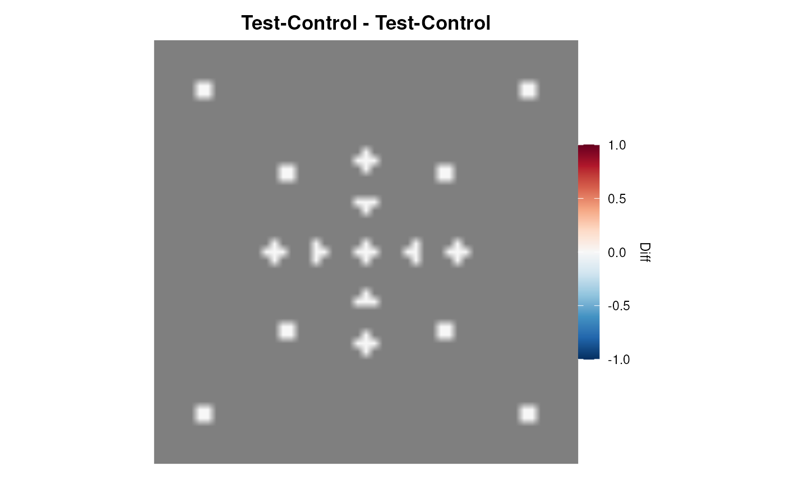
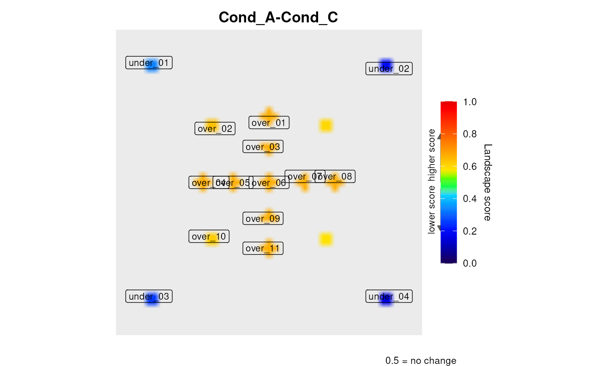
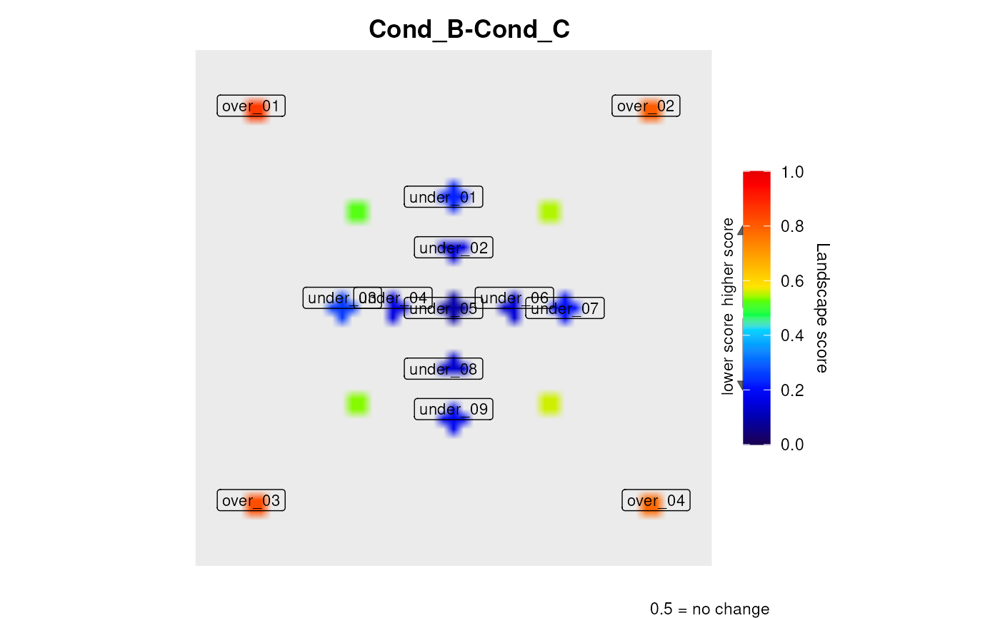
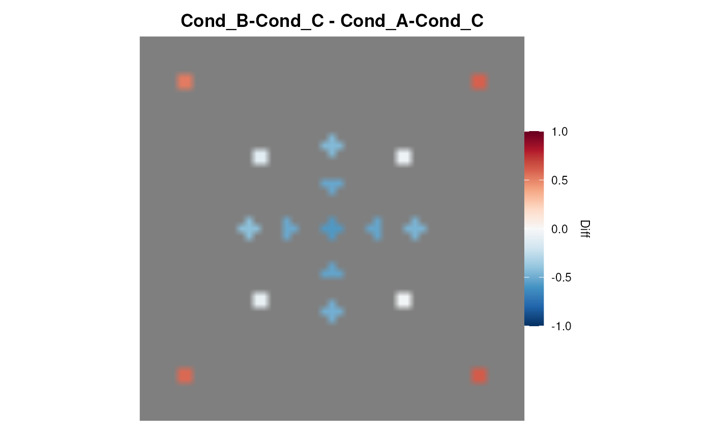

Compute a differential landscape by subtracting two
levi() results cell by cell. The resulting map highlights regions
where expression changed between conditions A and B.
leviDiff(
result_a,
result_b,
label_a = NULL,
label_b = NULL,
setcolor = "default"
)Arguments
- result_a
A single
levi()result (list with$landscape).- result_b
A single
levi()result to subtract fromresult_a.- label_a
Character. Label for condition A. Default: uses
result_a$comparisonor"A".- label_b
Character. Label for condition B. Default: uses
result_b$comparisonor"B".- setcolor
Character palette name accepted by
levi(). Default"default"uses blue-to-red.
Value
Invisibly returns a list with:
diffdata.frame with columns X, Y, Diff (B minus A, range -1 to 1)
plotggplot2 differential landscape object
comparisoncharacter string summarising the subtraction
Details
Both results must have been generated with the same network and
same resolution (resolutionValueInput). The Diff
value is positive where condition B is more expressed and negative where
condition A is more expressed.
Both results must contain compatible metadata: signal mode, input scale, network/layout, grid/smoothing, missing genes and versions. Legacy results without metadata must be recalculated. zscore differences compare separately standardised relative positions and issue a warning.
Examples
hub_n <- system.file("extdata", "hub_network.dat", package = "levi")
hub_e <- system.file("extdata", "hub_expression.dat", package = "levi")
res <- levi(expressionInput = hub_e,
networkCoordinatesInput = hub_n,
fileTypeInput = "dat",
geneSymbolInput = "ID",
readExpColumn = readExpColumn("Test-Control"),
resolutionValueInput = 10,
smoothValueInput = 5)
 diff_res <- leviDiff(res, res)
diff_res <- leviDiff(res, res)

head(diff_res$diff)
#> X Y Diff
#> 1 1 1 NA
#> 2 1 10 NA
#> 3 1 11 NA
#> 4 1 12 NA
#> 5 1 13 NA
#> 6 1 14 NA
# \donttest{
# Two comparisons from the same network, then their differential landscape
multi_e <- system.file("extdata", "hub_multicomp_expression.dat",
package = "levi")
res2 <- levi(expressionInput = multi_e,
networkCoordinatesInput = hub_n,
fileTypeInput = "dat",
geneSymbolInput = "ID",
readExpColumn = readExpColumn("Cond_A-Cond_C",
"Cond_B-Cond_C"),
resolutionValueInput = 10,
smoothValueInput = 5)


diff_res <- leviDiff(res2[[1]], res2[[2]])

diff_res$plot
 # }
# }